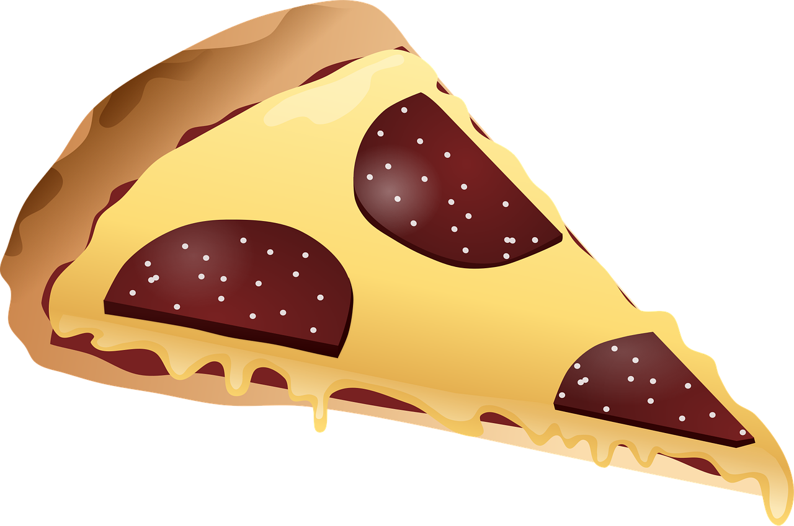

Home
Pizza Recipe

Description
This is a simple recipe for a delicious pizza. It includes all the necessary ingredients and steps to make a
perfect pizza.
Ingredients
- 100 grams pizza dough
- 50 grams tomato sauce
- 100 grams mozzarella cheese, shredded
- 50 grams pepperoni slices
- 1 tablespoon olive oil
- 1 teaspoon dried oregano
- 1 teaspoon garlic powder
- Salt and pepper to taste
Steps
- Preheat the oven to 220°C (425°F).
- Roll out the pizza dough on a floured surface to your desired thickness.
- Transfer the rolled-out dough to a pizza stone or baking sheet.
- Spread the tomato sauce evenly over the dough, leaving a small border around the edges.
- Sprinkle the shredded mozzarella cheese over the sauce.
- Arrange the pepperoni slices on top of the cheese.
- Drizzle olive oil over the pizza and sprinkle with dried oregano, garlic powder, salt, and pepper.
- Bake the pizza in the preheated oven for 12-15 minutes, or until the crust is golden and the cheese is
bubbly and slightly browned.
- Remove the pizza from the oven and let it cool for a few minutes before slicing and serving.